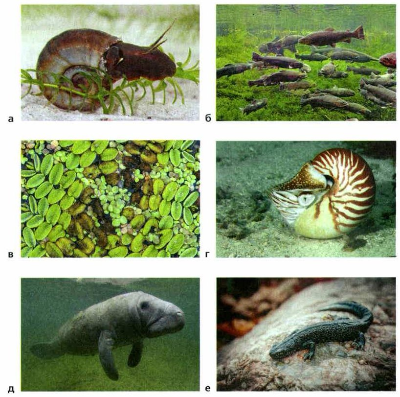
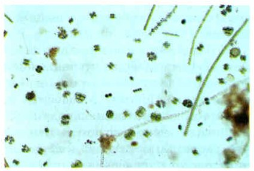
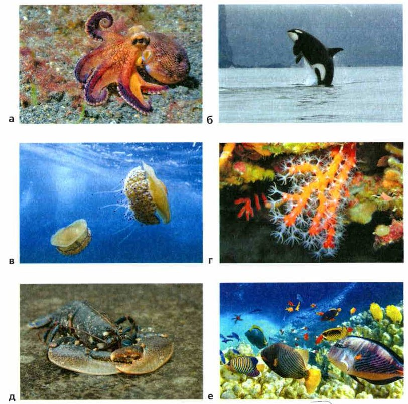
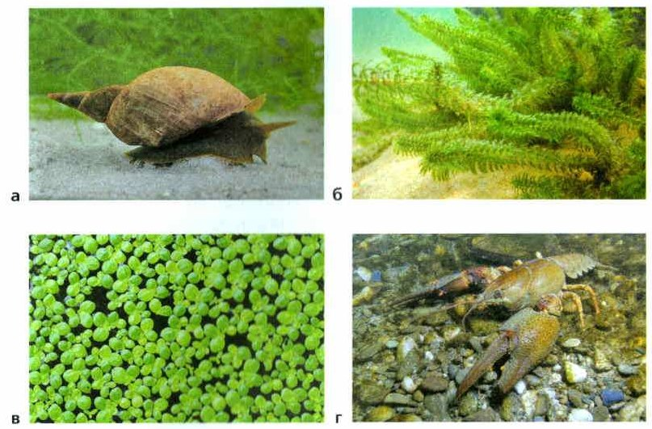
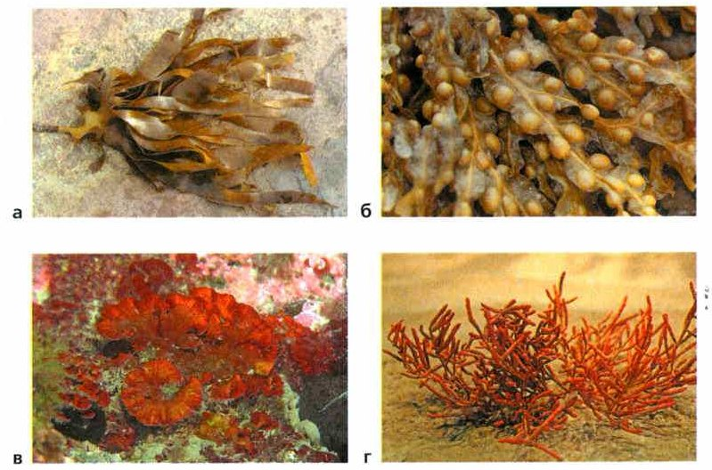
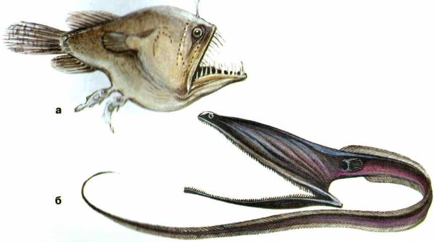

Вода в природе
Вода покрывает примерно 71% поверхности Земли — суши на планете намного меньше, чем воды. В природе вода бывает сразу в трёх видах: жидкая (вода), твёрдая (лёд и снег) и газообразная (пар).
Водоёмы бывают солёные и пресные. Солёные водоёмы — это океаны, моря и солёные озёра. Пресные — реки, озёра и даже лужи, которые потом пересыхают.
Почти вся вода Земли — в океанах. Посмотри на схему: если представить всю воду как 100 вёдер, то 97 вёдер — это океаны, 2 — ледники, 1 — подземные воды. А реки и озёра — всего полстакана из ста вёдер! Вода всё время движется по кругу: испаряется, выпадает дождём и снегом, стекает в реки и моря. Это круговорот воды.
Вода в природе. Водная среда занимает примерно 71% поверхности нашей планеты. Вода встречается в природе одновременно в трёх агрегатных состояниях: жидком, твёрдом и газообразном.
Природные водоёмы можно разделить на солёные и пресные. Солёные водоёмы — это океаны, моря, солёные озёра. К пресным водоёмам относят реки и озёра, а также временные, пересыхающие водоёмы — лужи.
Общие запасы воды на нашей планете распределены следующим образом: в океанах содержится 97% воды, в ледниках — 2%, подземные воды составляют 1%, в реках и озёрах содержится 0,01% воды. В виде пара в воздушной оболочке Земли находится около 20 тыс. т воды. В природе постоянно происходит круговорот воды.
1. Какие водоёмы называют солёными, а какие — пресными?
2. Где содержится больше всего воды на Земле?
Вода держит и давит
В воде живёт множество организмов (рис. 79). Вода прозрачная, плотная и долго держит тепло — всё это удобно для жизни.
Вода гораздо плотнее воздуха, поэтому она выталкивает тела вверх. В воде организм становится легче и может жить в толще воды, не опускаясь на дно.
Ряска и водяной гиацинт плавают по поверхности, а водяной тысячелистник целиком под водой. У трёхлистного шелковника листья двух видов: перистые — под водой и широкие — на поверхности.
Организмы живут везде: от плёнки на поверхности воды до самого дна океана. Многие мелкие организмы не умеют плавать сами — они будто парят, а вода их носит. Всех их вместе называют планктоном (от греч. планктос — блуждающий, рис. 80). Это бактерии, одноклеточные и нитчатые водоросли, мелкие рачки, черви и разные личинки.
Но плотная вода и мешает двигаться. Поэтому у быстрых пловцов — рыб, китов, кальмаров — обтекаемое тело: гладкое, вытянутое, без выступов. И хорошо развиты органы движения.
Чем глубже, тем сильнее вода давит — и со всех сторон сразу. Глубоководные животные выдерживают давление в тысячи раз больше, чем на суше.
Водная среда обитания обладает свойствами, которые делают её благоприятной для жизни множества организмов (рис. 79). Воде присущи такие свойства как прозрачность, высокая плотность, теплоёмкость — способность быстро нагреваться и долго удерживать тепло.
Плотность воды. Плотность воды намного больше, чем плотность воздуха. Высокая плотность воды определяет её значительную выталкивающую силу. В воде облегчается вес организмов и появляется возможность вести постоянную жизнь в водной толще, не опускаясь на дно.
В пресноводных водоёмах ряска и водяной гиацинт свободно плавают по водной поверхности, а водяной тысячелистник полностью погружён в воду. У трёхлистного шелковника два вида листьев — перистые подводные и более широкие плавающие.
В водной среде организмы распространены от поверхностной плёнки воды до придонных слоёв океана. Многие виды неспособных к активному плаванию организмов как бы парят в воде, находясь в ней во взвешенном состоянии. Совокупность мелких водных организмов, которые пассивно переносятся водными массами, называют планктоном (от греч. планктос — блуждающий) (рис. 80). Планктон состоит в основном из бактерий, одноклеточных и нитчатых водорослей, мелких рачков, червей и различных личинок.
Плотность воды затрудняет активное передвижение в ней. Поэтому быстро плавающие животные имеют обтекаемую форму тела и хорошо развитые органы передвижения. К ним относятся многие рыбы, киты, кальмары.
В связи с высокой плотностью воды давление с глубиной сильно увеличивается. Вода давит на организм со всех сторон. Глубоководные животные способны переносить давление, которое в тысячи раз выше, чем на поверхности суши.

▲ Кто из них быстро плавает, а кто медленно ползает или просто держится на воде?

▲ Найди нитчатые водоросли — длинные тонкие нити.
3. Почему организмы могут жить в толще воды, не опускаясь на дно?
4. Что такое планктон?
5. Почему у быстро плавающих животных обтекаемая форма тела?
Движение и температура воды
Вода всё время движется. В реках и ручьях — течение, в морях и океанах — приливы и отливы, течения и штормы. В озёрах воду гоняют ветер и разница температур.
Движение воды приносит организмам кислород и питательные вещества и выравнивает температуру во всём водоёме.
С глубиной температура воды меняется. Летом сверху вода теплее, а у дна холоднее. Зимой наоборот: у дна теплее, чем сверху. Поэтому многие водные животные зимуют на дне и в глубоких ямах. За сутки верхний слой тоже меняется: летним вечером вода теплее, а утром холоднее.
Но резко температура воды не меняется. У воды большая теплоёмкость: она медленно нагревается, набирая много тепла, и медленно его отдаёт, когда холодает. Поэтому в воде не бывает таких перепадов, как в воздухе, — это удобно для жизни.
Подвижность воды. Характерной особенностью водной среды является её подвижность как в стоячих водоёмах, так и в текущих реках и ручьях. В морях и океанах наблюдаются приливы и отливы, мощные течения, штормы.
Движение воды обеспечивает снабжение водных организмов кислородом и питательными веществами, приводит к выравниванию температуры во всём водоёме. В озёрах вода перемещается под действием ветра и разницы температур.
Температура воды. С глубиной температура воды в водоёмах меняется. В летнее время верхние слои воды теплее, чем нижние. Зимой наблюдается обратное явление, и температура воды на глубине выше, чем в верхних слоях. Поэтому многие водные животные перемещаются зимовать на дно и в глубокие ямы. Заметно меняется температура верхних слоёв воды и в течение суток. Летним вечером она теплее, а утром холоднее.
Однако колебания температуры в водной среде не бывают резкими. Это связано с высокой теплоёмкостью воды. Она медленно нагревается и поглощает много тепла, а при похолодании вода медленно отдаёт тепло. Поэтому температура воды не меняется так быстро, как температура воздуха. Такие термодинамические особенности водной среды создают благоприятные условия для жизни.
6. Почему многие водные животные зимуют на дне и в глубоких ямах?
7. Почему температура воды не меняется так резко, как температура воздуха?
8. Чем движение воды полезно для водных организмов?
Кислород и солёность
Кислорода в воде растворяется немного. Сколько его — зависит от температуры воды, глубины водоёма и скорости течения. Когда вода нагревается или её загрязняют, кислорода становится ещё меньше. Тогда случаются заморы — животные массово гибнут, потому что им нечем дышать.
Летом заморы бывают в жару: тёплая вода держит мало кислорода. Зимой — когда толстый лёд и снег не пускают воздух в воду.
Солёность. В воде растворяются многие вещества, в том числе соли. Если в литре воды меньше 1 грамма солей, это пресная вода: она в реках, многих озёрах, прудах. Пресноводным моллюскам и ракам важен растворённый в воде кальций — из него они строят раковину и твёрдый наружный скелет.
В океанах, морях и некоторых озёрах вода горько-солёная: в ней много солей, больше всего — поваренной соли. Солёная вода плотнее пресной. Кто живёт в морях и океанах — морские организмы (рис. 81), а кто в пресной воде — пресноводные (рис. 82).
Морские и пресноводные виды не переносят, когда солёность сильно меняется. Мадрепоровые кораллы гибнут, даже если вода станет чуть менее солёной. Насекомых в морях почти нет, а в пресной воде их очень много.
Содержание кислорода в воде. Содержание кислорода в воде зависит от температуры воды, глубины водоёма, скорости течения. Растворимость кислорода в воде не очень велика и сильно уменьшается при загрязнении и нагревании воды. Поэтому в водоёмах бывают заморы — массовая гибель животных из-за нехватки кислорода.
Летние заморы возникают при повышении температуры воды и уменьшении растворимости в ней кислорода. Зимние заморы случаются при образовании толстого слоя льда и снежного покрова, которые препятствуют доступу воздуха в воду.
Солёность воды. Вода является растворителем многих химических веществ. Благодаря этому в водоёмах содержатся растворы различных солей. Вода, в которой растворено менее 1 г минеральных веществ на 1 л, называется пресной. Такая вода в реках, многих озёрах, прудах.
Для жизни пресноводных животных существенное значение имеет растворённый в воде кальций. Моллюски, ракообразные и другие животные используют его для построения раковин, наружного скелета.
В океанах, морях и некоторых озёрах вода горько-солёная. В ней растворено большое количество солей. Среди них первое место по значимости для животных занимает поваренная соль. Солёная вода имеет большую плотность по сравнению с пресной. Растения и животные, обитающие в морях и океанах, называются морскими (рис. 81). Организмы, обитающие в пресноводных водоёмах, называют пресноводными (рис. 82).
Типично морские и типично пресноводные виды животных не переносят значительных изменений солёности воды. Мадрепоровые кораллы не выдерживают даже слабого опреснения воды. В морях и океанах практически не обитают насекомые. А пресноводные водоёмы обильно ими заселены.

▲ Кого из них ты видела в Москвариуме?

▲ Сравни прудовика с улиткой-катушкой на рис. 79: обе улитки живут в пресной воде.
живут в солёной воде морей и океанов: осьминог, медуза, кораллы
живут в пресной воде рек, озёр, прудов: прудовик, элодея, речной рак
Поменять их местами нельзя: и те и другие не переносят сильных изменений солёности.
Сначала сделай опыт и запиши, что увидела.
9. Почему в водоёмах бывают заморы?
10. Какую воду называют пресной?
11. Зачем пресноводным моллюскам и ракам кальций?
Свет и прозрачность воды
Много солнечных лучей отражается от поверхности воды — особенно на восходе и закате. А чем глубже, тем меньше света.
Очень важна прозрачность воды: от неё зависит, как глубоко проходит солнечный свет. А свет нужен растениям и водорослям для фотосинтеза (рис. 83). В прозрачной воде растения растут глубже, чем в мутной. Глубоководные животные приспособились жить в темноте.
Освещённость и прозрачность воды. От поверхности воды отражается много солнечных лучей. Особенно во время восхода и захода солнца. Количество света убывает с глубиной водоёма.
Для обитающих в воде организмов большое значение имеет её прозрачность. От неё зависит проникновение солнечного света, что очень важно для фотосинтезирующих растений (рис. 83). В водоёмах с прозрачной водой растения встречаются на большей глубине, чем в мутных. Глубоководные животные приспособились к обитанию в темноте.

▲ Ламинарию едят — это морская капуста. Ей, как всем водорослям, нужен свет.
12. Почему в прозрачной воде растения встречаются на большей глубине, чем в мутной?
13. Как меняется количество света с глубиной?
Итоги и «Моя лаборатория»
Солёные и пресные водоёмы · Планктон · Теплоёмкость · Пресноводные и морские организмы
- Какие свойства воды делают её благоприятной для жизни организмов?
- Как плотность воды влияет на жизнь организмов?
- Что такое планктон?
- Почему способность воды быстро нагреваться и долго удерживать тепло является благоприятным условием для жизни?
- Назовите причины, от которых зависит содержание кислорода в воде.
- Почему при передвижении организмов вода оказывает большее сопротивление, чем воздух?
- Почему живые организмы могут находиться в воде во взвешенном состоянии?
- Почему летом верхние слои водоёма имеют более высокую температуру, чем нижние, а зимой наоборот?
Почему учёные считают, что жизнь на нашей планете зародилась в водной среде?
Одни из самых удивительных существ на планете — глубоководные рыбы. Чем глубже, тем меньше света, холоднее вода и сильнее давление. Ко всему этому им пришлось приспособиться.
Глубже 1000 метров света нет совсем. Поэтому у одних глубоководных рыб глаз почти нет, а у других, наоборот, глаза очень большие и зоркие.
Некоторые рыбы умеют светиться: в особых органах идут химические реакции, и получается свет. Он помогает двигаться и приманивает добычу.
Живых организмов на глубине мало, значит, и еды мало. Поэтому у глубоководных рыб очень чуткие слух и осязание: они замечают добычу издалека — иногда за километры.
Глубины океана до сих пор плохо изучены, и никто точно не знает, сколько там видов рыб.
Одними из самых удивительных существ на нашей планете считаются глубоководные рыбы. Своей уникальностью они обязаны непростым условиям обитания.
С глубиной изменяются условия существования организмов, количество света резко уменьшается, низкая температура воды и высокое давление, вот факторы, к которым организмы должны иметь особые приспособления.
Считается, что ниже 1000 м никаких следов света не обнаружено. Поэтому глубоководные рыбы приспособлены к жизни в полной темноте. Некоторые виды рыб вообще не имеют развитых глаз, а у других видов, наоборот, глаза развиты очень сильно.
Ещё одно интересное приспособление — это особые органы, которые могут светиться, используя энергию химических реакций. Такой свет облегчает передвижение и приманивает добычу.
Поскольку разнообразие видов и количество организмов с глубиной уменьшается, то и пищи остаётся очень мало. Поэтому глубоководные рыбы имеют сверхчувствительные органы слуха и осязания, позволяющие им обнаруживать потенциальную добычу на большом расстоянии, которое иногда измеряется километрами.
Глубины Мирового океана всё ещё остаются неисследованными, поэтому точное количество видов глубоководных рыб неизвестно.

▲ Посмотри, какие огромные пасти: еды на глубине мало, и упустить добычу нельзя.
Проверь себя
Ошиблась — не страшно, попробуй другую кнопку.
Осьминог
Рис. 81.
Большой прудовик
Рис. 82.
Косатка
Рис. 81.
Элодея
Рис. 82.
Кораллы
Не выносят даже слабого опреснения воды.
Речной рак
Рис. 82.
Медуза
Рис. 81.
Зимой у дна озера теплее, чем у поверхности
Поэтому многие животные зимуют на дне.
В тёплой воде кислорода больше, чем в холодной
Наоборот: при нагревании кислорода меньше — отсюда летние заморы.
Солёная вода плотнее пресной
Поэтому яйцо в ней всплывает.
В морях живёт очень много насекомых
В морях насекомых практически нет, а в пресной воде много.
Чем глубже, тем сильнее давит вода
И тем темнее.
1. Сколько всей воды Земли находится в океанах?
2. Почему в воде можно парить, не опускаясь на дно?
3. Что такое планктон?
4. Где зимуют многие водные животные?
5. Когда случаются летние заморы?
6. Яйцо всплыло в стакане. Какая в нём вода?
Расскажи вслух
Вода в природе
- Вода занимает примерно 71% поверхности Земли; бывает жидкой, твёрдой и газообразной.
- Солёные водоёмы: океаны, моря, солёные озёра; пресные: реки, озёра, лужи.
- 97% воды — в океанах, в реках и озёрах — 0,01%; в природе идёт круговорот воды.
Плотность и температура воды
- Вода плотная: выталкивает тела, в ней можно парить — так живёт планктон.
- Плотность мешает двигаться — у быстрых пловцов обтекаемое тело; с глубиной давление растёт.
- Теплоёмкость: температура меняется медленно; зимой у дна теплее — там зимуют животные.
Кислород, солёность и свет
- Кислорода в воде мало; при нагревании и загрязнении ещё меньше — бывают заморы.
- Пресная вода — меньше 1 г солей на 1 л; морские и пресноводные организмы не переносят смены солёности.
- Свет убывает с глубиной; в прозрачной воде растения растут глубже.